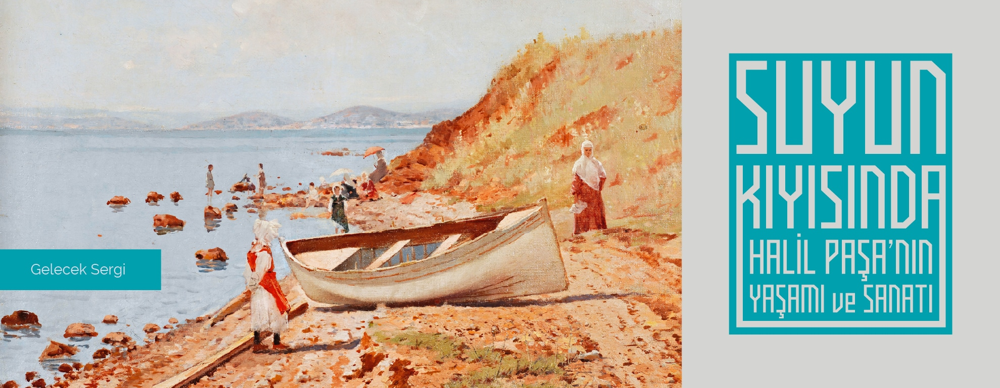
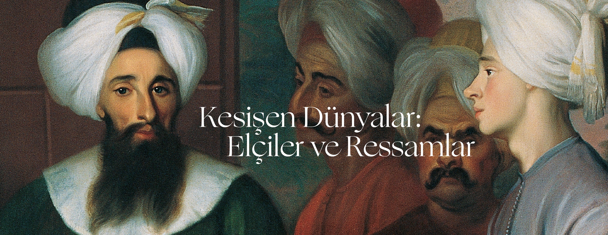
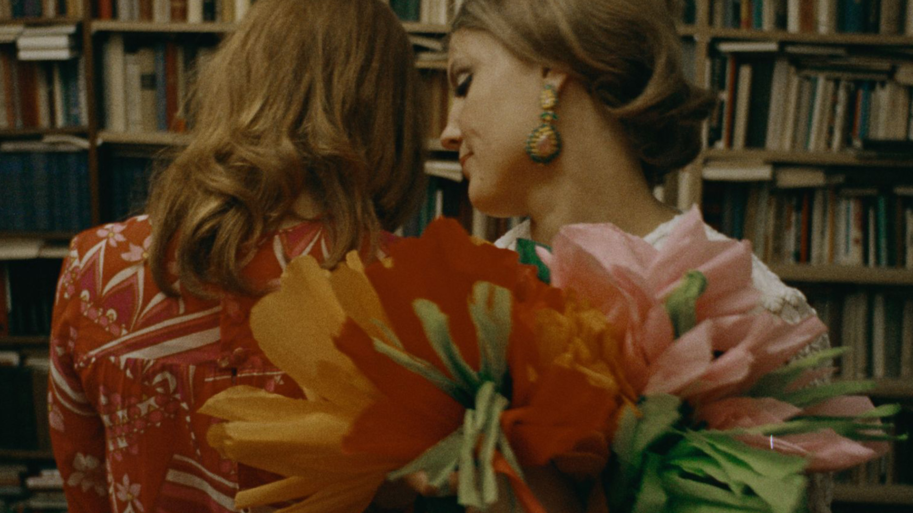
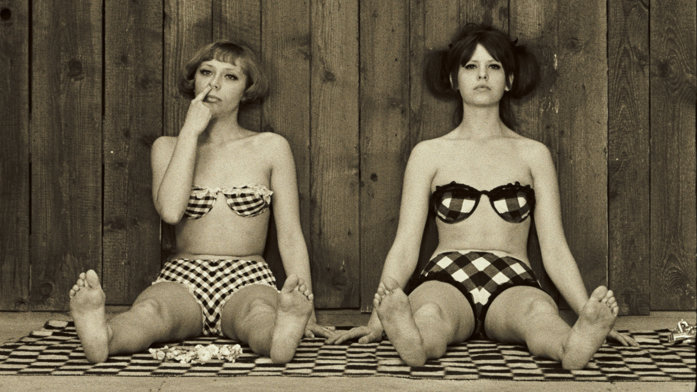
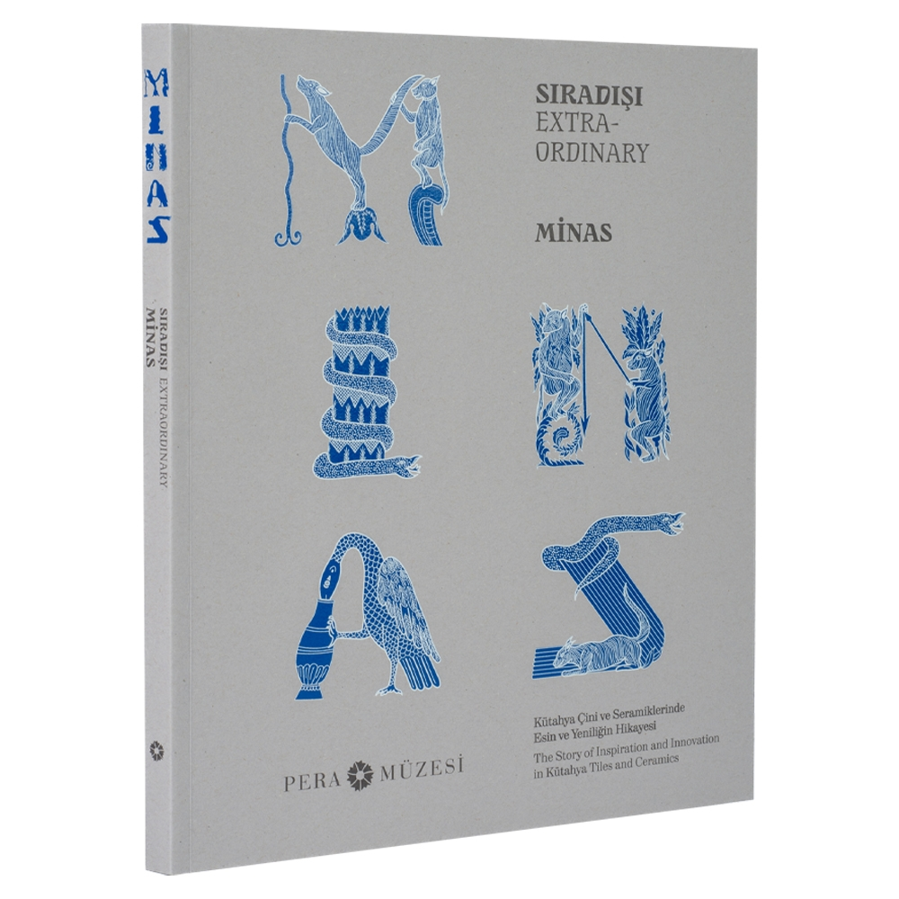
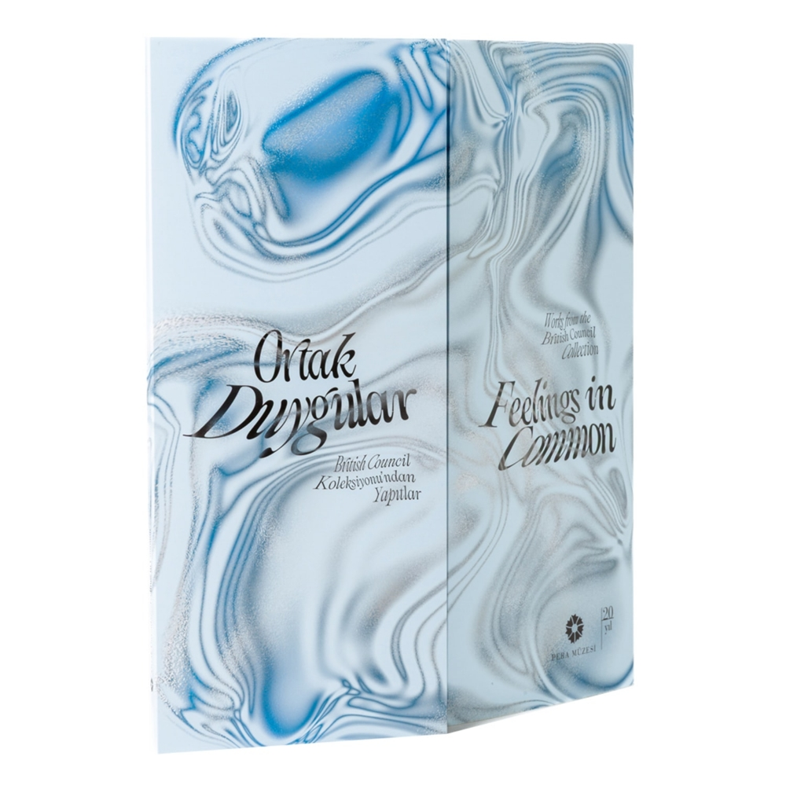
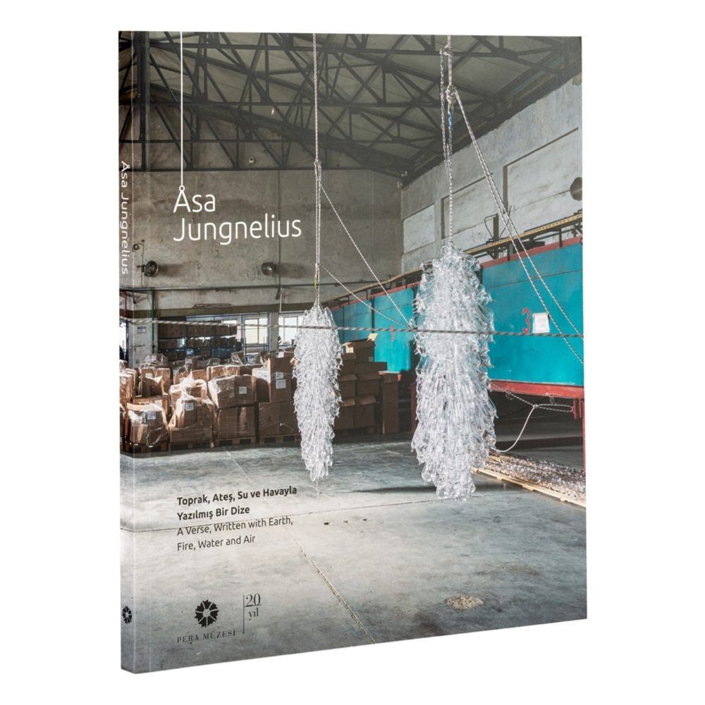

Pera Öğrenme Dünya Kadınlar Günü: Yaratıcı Hareket ve Sanat..
6 Mart 2026/19.00 Mevsimler ve ay döngüsünden ilham alan bu çalışmada, kadın olmanın çok katmanlı ve dönüştürücü yönlerine küçük ipuçlarıyla birlikte alan açılıyor.

Pera Film Dokuz Canlı Kedi 7 Mart 2026 / 15.00
Almanya’nın ilk feminist filmi olarak kabul edilen Dokuz Canlı Kedi, belgesel tarzı sahnelerin sürreal ara sekanslarla iç içe geçtiği, Fransız Yeni Dalgası etkisindeki kurgusuyla ve Technicolor’la çekilmiş renkli görsel dünyasıyla da dikkat çekmiştir.

Pera Film Cadı Üçlemesi 13+
14 yaşında bir kız çocuğu, tutsak olduğu karanlık bodrumda, bir örümcekle iletişim kurar.

Pera Film Papatyalar
6 Mart 2026 / 19.00 Absürt mizahı, kolajı andıran kurgusu ve capcanlı renklerden oluşan görsel diliyle Papatyalar, ahlâk, düzen ve kadınlık beklentilerini baştan sona provoke eden, unutulmaz bir Yeni Dalga klasiği.

Sıradışı Minas Kütahya Çini ve Seramiklerinde Esin ve Yeniliğin Hikayesi
Sıradışı Minas: Kütahya Çini ve Seramiklerinde Esin ve Yeniliğin Hikayesi kataloğu, Suna ve İnan Kıraç Vakfı Kütahya Çini ve Seramikleri Koleksiyonu’ndan eserlerle 19. yüzyıl sonu ve 20. yüzyıl başında Kütahyalı ustaların, kaybolmaya yüz tutmuş çiniciliği canlandırma çabalarını bir usta ve bir eser grubu üzerinden inceliyor.
Ortak Duygular British Council Koleksiyonu’ndan Yapıtlar
Sergiye eşlik eden yayında, sergi küratörü Ulya Soley’in kapsamlı metninin yanı sıra, eleştirmen ve teorisyen Boris Groys’un “Koleksiyonun Mantığı”, Eliott Burns’un bu sergi projesi için kaleme aldığı “Sıvı Bir Koleksiyonda Gezinmek” adlı yazıları yer alıyor. Burns, sıvı bir koleksiyon metaforu ile British Council Koleksiyonu’ndaki eserlerin uluslararası ödünç dolaşımıyla lojistik, hareketlilik ve kültürel etkileşimlerini inceliyor.
Åsa Jungnelius Toprak, Ateş, Su ve Havayla Yazılmış Bir Dize
Sergi kataloğunda, küratör Elif Kamışlı’nın serginin oluşum ve araştırma sürecini derinlemesine betimleyen metninin yanı sıra, günümüzün önde gelen antropologlarından Tim Ingold’un, Jungnelius’un eserleri üzerinden camın kökenlerini incelediği makalesi ve arkeoloji ve kültürel miras profesörü Bodil Petersson’un İsveç’in Småland bölgesindeki cam üretimini inceleyen “Camın Hareketleri ve Dönüşümleri” başlıklı yazısı yer alıyor.